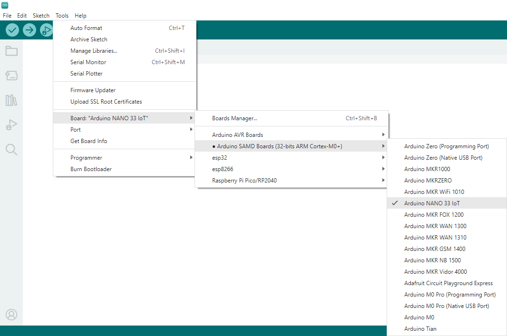
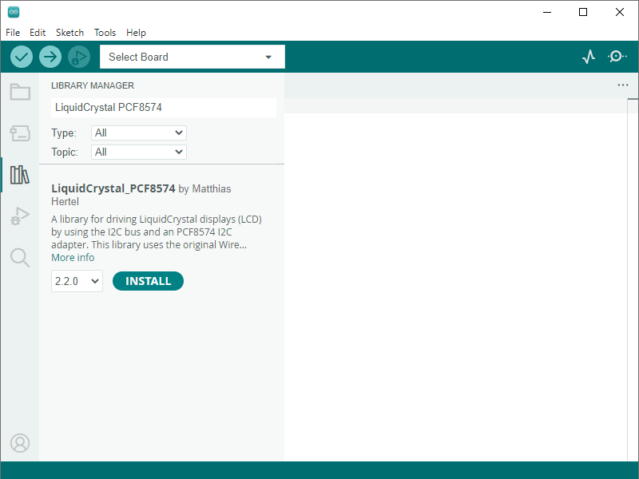
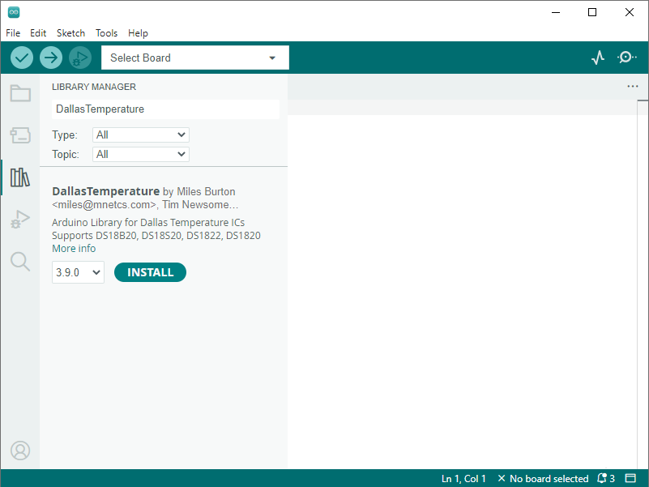
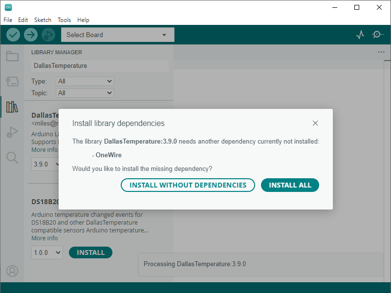
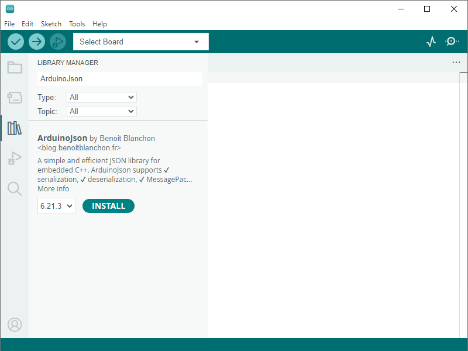

Antes de comenzar a programar se debe configurar el entorno Arduino® para poder compilar y cargar los programas adecuadamente al dispositivo Arduino Nano.
Abrir el menú Tools --> Board: --> Arduino AVR Boards y seleccionar la placa Arduino Nano

Abrir el menú de la izquierda LIBRARY MANAGER
Buscar e instalar la librería LiquidCrystal_PCF8574

Buscar e instalar la librería DallasTemperature

Aceptar INSTALL ALL la instalación de la librería adicional OneWire

Buscar e instalar la librería ArduinoJson

Ejercicio 1: Temporizador con diodo LED:
Ejercicio 2: Sensor de temperatura:
Ejercicio 3: Pulsador:
Programa App Inventor 2


Ejercicio 4: Contador:
Programa App Inventor 2


Ejercicio 4: Potenciómetro

Programa App Inventor 2